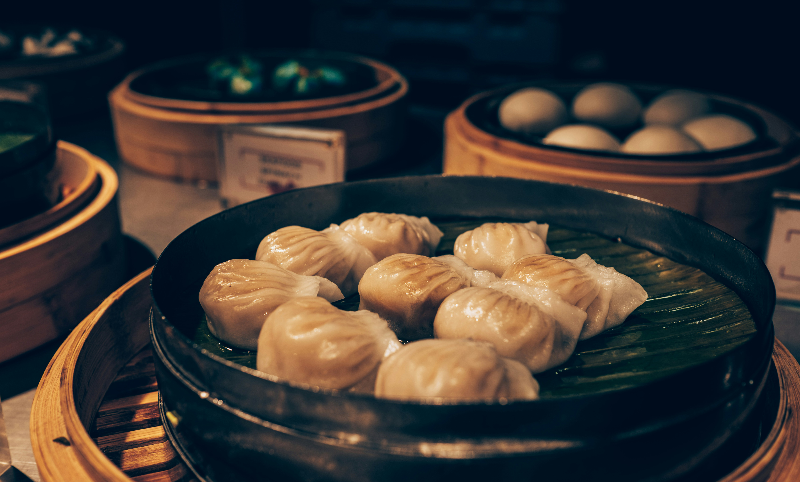

African Culinary Regions
Explore the diverse culinary traditions across Africa

West Africa
Known for its rich, spicy dishes and staple foods like yams, cassava, and plantains. Famous for Jollof Rice, Egusi Soup, and Moin Moin.
Explore West African Recipes
East Africa
Features a blend of African, Arab, and Indian influences. Known for Injera, Nyama Choma, and Ugali.
Explore East African Recipes
North Africa
Mediterranean-influenced cuisine with dishes like Tagine, Couscous, and Falafel. Rich in spices and herbs.
Explore North African Recipes

South Africa
A fusion of indigenous, Dutch, Indian, and Malay influences. Famous for Bobotie, Biltong, and Braai.
Explore South African Recipes